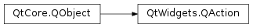

QAction¶
Inherited by: QWidgetAction
Synopsis¶
Functions¶
- def
actionGroup() - def
activate(event) - def
associatedGraphicsWidgets() - def
associatedWidgets() - def
autoRepeat() - def
data() - def
font() - def
icon() - def
iconText() - def
isCheckable() - def
isChecked() - def
isEnabled() - def
isIconVisibleInMenu() - def
isSeparator() - def
isShortcutVisibleInContextMenu() - def
isVisible() - def
menu() - def
menuRole() - def
parentWidget() - def
priority() - def
setActionGroup(group) - def
setAutoRepeat(arg__1) - def
setCheckable(arg__1) - def
setData(var) - def
setFont(font) - def
setIcon(icon) - def
setIconText(text) - def
setIconVisibleInMenu(visible) - def
setMenu(menu) - def
setMenuRole(menuRole) - def
setPriority(priority) - def
setSeparator(b) - def
setShortcut(shortcut) - def
setShortcutContext(context) - def
setShortcutVisibleInContextMenu(show) - def
setShortcuts(arg__1) - def
setShortcuts(shortcuts) - def
setStatusTip(statusTip) - def
setText(text) - def
setToolTip(tip) - def
setWhatsThis(what) - def
shortcut() - def
shortcutContext() - def
shortcuts() - def
showStatusText([widget=nullptr]) - def
statusTip() - def
text() - def
toolTip() - def
whatsThis()
Slots¶
- def
hover() - def
setChecked(arg__1) - def
setDisabled(b) - def
setEnabled(arg__1) - def
setVisible(arg__1) - def
toggle() - def
trigger()
Detailed Description¶
The
PySide2.QtWidgets.QActionclass provides an abstract user interface action that can be inserted into widgets.In applications many common commands can be invoked via menus, toolbar buttons, and keyboard shortcuts. Since the user expects each command to be performed in the same way, regardless of the user interface used, it is useful to represent each command as an action .
Actions can be added to menus and toolbars, and will automatically keep them in sync. For example, in a word processor, if the user presses a Bold toolbar button, the Bold menu item will automatically be checked.
Actions can be created as independent objects, but they may also be created during the construction of menus; the
PySide2.QtWidgets.QMenuclass contains convenience functions for creating actions suitable for use as menu items.A
PySide2.QtWidgets.QActionmay contain an icon, menu text, a shortcut, status text, “What’s This?” text, and a tooltip. Most of these can be set in the constructor. They can also be set independently withsetIcon(),setText(),setIconText(),setShortcut(),setStatusTip(),setWhatsThis(), andsetToolTip(). For menu items, it is possible to set an individual font withsetFont().Actions are added to widgets using
QWidget.addAction()orQGraphicsWidget.addAction(). Note that an action must be added to a widget before it can be used; this is also true when the shortcut should be global (i.e.,Qt.ApplicationShortcutasQt.ShortcutContext).Once a
PySide2.QtWidgets.QActionhas been created it should be added to the relevant menu and toolbar, then connected to the slot which will perform the action. For example:openAct = QAction(QIcon(":/images/open.png"), tr("&Open..."), self) openAct.setShortcuts(QKeySequence.Open) openAct.setStatusTip(tr("Open an existing file")) connect(openAct, SIGNAL("triggered()"), self, SLOT("open()"))We recommend that actions are created as children of the window they are used in. In most cases actions will be children of the application’s main window.
-
class
PySide2.QtWidgets.QAction([parent=nullptr])¶ -
class
PySide2.QtWidgets.QAction(icon, text[, parent=nullptr]) -
class
PySide2.QtWidgets.QAction(text[, parent=nullptr]) Parameters: - icon –
PySide2.QtGui.QIcon - text – unicode
- parent –
PySide2.QtCore.QObject
Constructs an action with
parent. Ifparentis an action group the action will be automatically inserted into the group.Note
The
parentargument is optional since Qt 5.7.Constructs an action with an
iconand sometextandparent. Ifparentis an action group the action will be automatically inserted into the group.The action uses a stripped version of
text(e.g. “&Menu Option…” becomes “Menu Option”) as descriptive text for tool buttons. You can override this by setting a specific description withsetText(). The same text will be used for tooltips unless you specify a different text usingsetToolTip().Constructs an action with some
textandparent. Ifparentis an action group the action will be automatically inserted into the group.The action uses a stripped version of
text(e.g. “&Menu Option…” becomes “Menu Option”) as descriptive text for tool buttons. You can override this by setting a specific description withsetText(). The same text will be used for tooltips unless you specify a different text usingsetToolTip().- icon –
-
PySide2.QtWidgets.QAction.MenuRole¶ This enum describes how an action should be moved into the application menu on macOS .
Constant Description QAction.NoRole This action should not be put into the application menu QAction.TextHeuristicRole This action should be put in the application menu based on the action’s text as described in the PySide2.QtWidgets.QMenuBardocumentation.QAction.ApplicationSpecificRole This action should be put in the application menu with an application specific role QAction.AboutQtRole This action handles the “About Qt” menu item. QAction.AboutRole This action should be placed where the “About” menu item is in the application menu. The text of the menu item will be set to “About <application name>”. The application name is fetched from the Info.plistfile in the application’s bundle (See Qt for macOS - Deployment).QAction.PreferencesRole This action should be placed where the “Preferences…” menu item is in the application menu. QAction.QuitRole This action should be placed where the Quit menu item is in the application menu. Setting this value only has effect on items that are in the immediate menus of the menubar, not the submenus of those menus. For example, if you have File menu in your menubar and the File menu has a submenu, setting the for the actions in that submenu have no effect. They will never be moved.
-
PySide2.QtWidgets.QAction.Priority¶ This enum defines priorities for actions in user interface.
Constant Description QAction.LowPriority The action should not be prioritized in the user interface. QAction.NormalPriority QAction.HighPriority The action should be prioritized in the user interface. See also
Note
This enum was introduced in Qt 4.6.
-
PySide2.QtWidgets.QAction.ActionEvent¶ This enum type is used when calling
QAction.activate()Constant Description QAction.Trigger this will cause the QAction.triggered()signal to be emitted.QAction.Hover this will cause the QAction.hovered()signal to be emitted.
-
PySide2.QtWidgets.QAction.actionGroup()¶ Return type: PySide2.QtWidgets.QActionGroupReturns the action group for this action. If no action group manages this action then 0 will be returned.
See also
PySide2.QtWidgets.QActionGroupQAction.setActionGroup()
-
PySide2.QtWidgets.QAction.activate(event)¶ Parameters: event – PySide2.QtWidgets.QAction.ActionEventSends the relevant signals for
QAction.ActionEventevent.Action based widgets use this API to cause the
PySide2.QtWidgets.QActionto emit signals as well as emitting their own.
-
PySide2.QtWidgets.QAction.associatedGraphicsWidgets()¶ Return type: Returns a list of widgets this action has been added to.
See also
-
PySide2.QtWidgets.QAction.associatedWidgets()¶ Return type: Returns a list of widgets this action has been added to.
-
PySide2.QtWidgets.QAction.autoRepeat()¶ Return type: PySide2.QtCore.boolSee also
-
PySide2.QtWidgets.QAction.changed()¶
-
PySide2.QtWidgets.QAction.data()¶ Return type: object Returns the user data as set in
QAction.setData.See also
-
PySide2.QtWidgets.QAction.font()¶ Return type: PySide2.QtGui.QFontSee also
-
PySide2.QtWidgets.QAction.hover()¶ This is a convenience slot that calls activate(Hover).
-
PySide2.QtWidgets.QAction.hovered()¶
-
PySide2.QtWidgets.QAction.icon()¶ Return type: PySide2.QtGui.QIconSee also
-
PySide2.QtWidgets.QAction.iconText()¶ Return type: unicode See also
-
PySide2.QtWidgets.QAction.isCheckable()¶ Return type: PySide2.QtCore.bool
-
PySide2.QtWidgets.QAction.isChecked()¶ Return type: PySide2.QtCore.bool
-
PySide2.QtWidgets.QAction.isEnabled()¶ Return type: PySide2.QtCore.bool
-
PySide2.QtWidgets.QAction.isIconVisibleInMenu()¶ Return type: PySide2.QtCore.bool
-
PySide2.QtWidgets.QAction.isSeparator()¶ Return type: PySide2.QtCore.boolReturns
trueif this action is a separator action; otherwise it returnsfalse.See also
QAction.setSeparator()
-
PySide2.QtWidgets.QAction.isShortcutVisibleInContextMenu()¶ Return type: PySide2.QtCore.bool
-
PySide2.QtWidgets.QAction.isVisible()¶ Return type: PySide2.QtCore.bool
Return type: PySide2.QtWidgets.QMenuReturns the menu contained by this action. Actions that contain menus can be used to create menu items with submenus, or inserted into toolbars to create buttons with popup menus.
See also
Return type: PySide2.QtWidgets.QAction.MenuRoleSee also
-
PySide2.QtWidgets.QAction.parentWidget()¶ Return type: PySide2.QtWidgets.QWidgetReturns the parent widget.
-
PySide2.QtWidgets.QAction.priority()¶ Return type: PySide2.QtWidgets.QAction.PrioritySee also
-
PySide2.QtWidgets.QAction.setActionGroup(group)¶ Parameters: group – PySide2.QtWidgets.QActionGroupSets this action group to
group. The action will be automatically added to the group’s list of actions.Actions within the group will be mutually exclusive.
See also
PySide2.QtWidgets.QActionGroupQAction.actionGroup()
-
PySide2.QtWidgets.QAction.setAutoRepeat(arg__1)¶ Parameters: arg__1 – PySide2.QtCore.boolSee also
-
PySide2.QtWidgets.QAction.setCheckable(arg__1)¶ Parameters: arg__1 – PySide2.QtCore.boolSee also
-
PySide2.QtWidgets.QAction.setChecked(arg__1)¶ Parameters: arg__1 – PySide2.QtCore.boolSee also
-
PySide2.QtWidgets.QAction.setData(var)¶ Parameters: var – object Sets the action’s internal data to the given
userData.See also
-
PySide2.QtWidgets.QAction.setDisabled(b)¶ Parameters: b – PySide2.QtCore.boolThis is a convenience function for the
enabled()property, that is useful for signals–slots connections. Ifbis true the action is disabled; otherwise it is enabled.
-
PySide2.QtWidgets.QAction.setEnabled(arg__1)¶ Parameters: arg__1 – PySide2.QtCore.boolSee also
PySide2.Qt3DCore.Qt3DCore::QNode.isEnabled()
-
PySide2.QtWidgets.QAction.setFont(font)¶ Parameters: font – PySide2.QtGui.QFontSee also
-
PySide2.QtWidgets.QAction.setIcon(icon)¶ Parameters: icon – PySide2.QtGui.QIconSee also
-
PySide2.QtWidgets.QAction.setIconText(text)¶ Parameters: text – unicode See also
-
PySide2.QtWidgets.QAction.setIconVisibleInMenu(visible)¶ Parameters: visible – PySide2.QtCore.boolSee also
-
PySide2.QtWidgets.QAction.setMenu(menu)¶ Parameters: menu – PySide2.QtWidgets.QMenuSets the menu contained by this action to the specified
menu.See also
-
PySide2.QtWidgets.QAction.setMenuRole(menuRole)¶ Parameters: menuRole – PySide2.QtWidgets.QAction.MenuRoleSee also
-
PySide2.QtWidgets.QAction.setPriority(priority)¶ Parameters: priority – PySide2.QtWidgets.QAction.PrioritySee also
-
PySide2.QtWidgets.QAction.setSeparator(b)¶ Parameters: b – PySide2.QtCore.boolIf
bis true then this action will be considered a separator.How a separator is represented depends on the widget it is inserted into. Under most circumstances the text, submenu, and icon will be ignored for separator actions.
See also
QAction.isSeparator()
-
PySide2.QtWidgets.QAction.setShortcut(shortcut)¶ Parameters: shortcut – PySide2.QtGui.QKeySequenceSee also
-
PySide2.QtWidgets.QAction.setShortcutContext(context)¶ Parameters: context – PySide2.QtCore.Qt.ShortcutContextSee also
-
PySide2.QtWidgets.QAction.setShortcutVisibleInContextMenu(show)¶ Parameters: show – PySide2.QtCore.boolSee also
-
PySide2.QtWidgets.QAction.setShortcuts(arg__1)¶ Parameters: arg__1 – PySide2.QtGui.QKeySequence.StandardKeySets a platform dependent list of shortcuts based on the
key. The result of calling this function will depend on the currently running platform. Note that more than one shortcut can assigned by this action. If only the primary shortcut is required, usesetShortcut()instead.See also
QKeySequence.keyBindings()
-
PySide2.QtWidgets.QAction.setShortcuts(shortcuts) Parameters: shortcuts – Sets
shortcutsas the list of shortcuts that trigger the action. The first element of the list is the primary shortcut.See also
-
PySide2.QtWidgets.QAction.setStatusTip(statusTip)¶ Parameters: statusTip – unicode See also
-
PySide2.QtWidgets.QAction.setVisible(arg__1)¶ Parameters: arg__1 – PySide2.QtCore.boolSee also
-
PySide2.QtWidgets.QAction.setWhatsThis(what)¶ Parameters: what – unicode See also
-
PySide2.QtWidgets.QAction.shortcut()¶ Return type: PySide2.QtGui.QKeySequenceReturns the primary shortcut.
See also
-
PySide2.QtWidgets.QAction.shortcutContext()¶ Return type: PySide2.QtCore.Qt.ShortcutContextSee also
-
PySide2.QtWidgets.QAction.shortcuts()¶ Return type: Returns the list of shortcuts, with the primary shortcut as the first element of the list.
See also
-
PySide2.QtWidgets.QAction.showStatusText([widget=nullptr])¶ Parameters: widget – PySide2.QtWidgets.QWidgetReturn type: PySide2.QtCore.boolUpdates the relevant status bar for the
widgetspecified by sending aPySide2.QtGui.QStatusTipEventto its parent widget. Returnstrueif an event was sent; otherwise returnsfalse.If a null widget is specified, the event is sent to the action’s parent.
See also
-
PySide2.QtWidgets.QAction.statusTip()¶ Return type: unicode See also
-
PySide2.QtWidgets.QAction.toggle()¶ This is a convenience function for the
checked()property. Connect to it to change the checked state to its opposite state.
-
PySide2.QtWidgets.QAction.toggled(arg__1)¶ Parameters: arg__1 – PySide2.QtCore.bool
-
PySide2.QtWidgets.QAction.toolTip()¶ Return type: unicode See also
-
PySide2.QtWidgets.QAction.trigger()¶ This is a convenience slot that calls activate(Trigger).
-
PySide2.QtWidgets.QAction.triggered([checked=false])¶ Parameters: checked – PySide2.QtCore.bool
-
PySide2.QtWidgets.QAction.whatsThis()¶ Return type: unicode See also
© 2018 The Qt Company Ltd. Documentation contributions included herein are the copyrights of their respective owners. The documentation provided herein is licensed under the terms of the GNU Free Documentation License version 1.3 as published by the Free Software Foundation. Qt and respective logos are trademarks of The Qt Company Ltd. in Finland and/or other countries worldwide. All other trademarks are property of their respective owners.